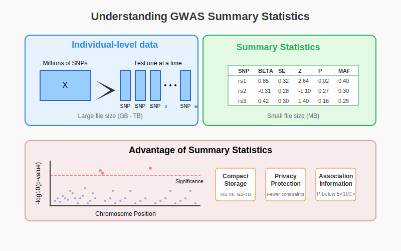

Intuitional Description#
Summary statistics in genetics capture the association between genetic variants and traits, allowing researchers to share and analyze meaningful associations without requiring access to the complete individual-level genotype and phenotype data.
Graphical Summary#

Key Formula#
This Z-score formula represents the most fundamental calculation in statistical genetics summary statistics. It standardizes the effect size (\(\beta\)) of a genetic variant by its standard error (\(\text{SE}\)), creating a normalized measure of association strength. The importance of this formula lies in its ability to quantify statistical significance while accounting for estimation precision. This single value determines p-values, enables cross-variant comparison, and forms the foundation for downstream analyses including meta-analysis, polygenic risk scoring, and genetic correlation estimation.
Technical Details#
Single Marker Linear Regression Model#
Assuming that we use the single marker linear regression model (and everything is applicable to logistic regression or multiple markers models etc.), then for a trait vector \( \mathbf{y} \) and a genetic variant \( \mathbf{X}_j \) across \( N \) individuals:
Where:
\( \mathbf{Y} \) is the \( N \times 1 \) vector of trait values for \( N \) individuals.
\( \mathbf{X}_j \) is the \( N \times 1 \) vector of genotypes for variant \( j \) across all individuals.
\( \beta_j \) is the effect size of the genetic variant \( j \).
\( \boldsymbol{\epsilon} \) is the \( N \times 1 \) vector of error terms (residuals), assumed to follow a normal distribution with mean 0 and variance \( \sigma^2 \).
From OLS to Summary Staistics#
And using Ordinary Least Squares (OLS) method (mentioned in Section [FIXME – refer to the section label]), which minimizes the residual sum of squares (RSS) between the observed and predicted trait values, and both \(\mathbf{x}\) and \(\mathbf{Y}\) are scaled to have mean 0 and variance 1, we get the following formula for the OLS estimator of \( \beta_j\):
And the variance of \( \hat{\beta}_j \) can be calculated as:
Where \( \sigma^2 \) is the residual variance, which is typically estimated from the residuals of the model.
Z-score and P-value#
Z-score
Z-score is the standardized effect size
\[ Z_j = \frac{\hat{\beta}_j}{SE(\hat{\beta}_j)} = \frac{\hat{\beta}_j}{\sqrt{\text{Var}(\hat{\beta}_j)}} = \frac{\hat{\beta}_j}{\sigma} \]Under the null hypothesis of no association (\(\beta_j = 0\)), \(Z_j\) follows a standard normal distribution, which forms the basis for statistical testing.
P-value
Two-sided p-value: $\( P = 2 \times (1 - \Phi(|Z|)) \)$
\(\Phi\) is the cumulative distribution function of the standard normal distribution
Represents the probability of observing an effect as extreme as β by chance
Example GWAS Summary Statistics Table – part A#
SNP (rsID) |
CHR |
BP |
A1 |
A2 |
MAF |
BETA |
SE |
Z-score |
P-value |
N |
|---|---|---|---|---|---|---|---|---|---|---|
rs12345 |
1 |
10583 |
A |
G |
0.12 |
0.045 |
0.010 |
4.50 |
1.2e-06 |
100000 |
rs67890 |
2 |
20345 |
C |
T |
0.35 |
-0.030 |
0.008 |
-3.75 |
5.4e-04 |
95000 |
rs54321 |
18 |
45678 |
G |
A |
0.22 |
0.060 |
0.012 |
5.00 |
2.1e-07 |
102000 |
SNP (rsID): Identifier for the single nucleotide polymorphism, such as
rs12345orchr21:295472:G:A.CHR: Chromosome number where the SNP is located. Other common names:
chrom,chromosomeBP: Genomic position of the SNP, specific to a reference genome assembly (e.g., GRCh37 or GRCh38). Other common names:
pos,position
Example GWAS Summary Statistics Table – part B#
SNP (rsID) |
CHR |
BP |
A1 |
A2 |
MAF |
BETA |
SE |
Z-score |
P-value |
N |
|---|---|---|---|---|---|---|---|---|---|---|
rs12345 |
1 |
10583 |
A |
G |
0.12 |
0.045 |
0.010 |
4.50 |
1.2e-06 |
100000 |
rs67890 |
2 |
20345 |
C |
T |
0.35 |
-0.030 |
0.008 |
-3.75 |
5.4e-04 |
95000 |
rs54321 |
18 |
45678 |
G |
A |
0.22 |
0.060 |
0.012 |
5.00 |
2.1e-07 |
102000 |
A1 and A2: The two alleles at the variant site, with one designated as the effect allele. Other common names:
REFandALT,Effect alleleandOther alleleNote that one allele may be effect allele in one study but alternative allele in another.
MAF: The frequency of the less common allele for variant \(j\) in the sample.
EAF: The frequency of the effect allele for variant \(j\) in the sample (note that this doesn’t have to be the minor allele) (sometimes called
RAF: risk allele frequency)
Example GWAS Summary Statistics Table – part C#
SNP (rsID) |
CHR |
BP |
A1 |
A2 |
MAF |
BETA |
SE |
Z-score |
P-value |
N |
|---|---|---|---|---|---|---|---|---|---|---|
rs12345 |
1 |
10583 |
A |
G |
0.12 |
0.045 |
0.010 |
4.50 |
1.2e-06 |
100000 |
rs67890 |
2 |
20345 |
C |
T |
0.35 |
-0.030 |
0.008 |
-3.75 |
5.4e-04 |
95000 |
rs54321 |
18 |
45678 |
G |
A |
0.22 |
0.060 |
0.012 |
5.00 |
2.1e-07 |
102000 |
BETA: Estimated effect size (\(\hat{\beta}\)), representing the association between the effect allele and the trait. Always check which allele it corresponds to.
SE: Standard error of the effect size estimat, reflecting the uncertainty in the effect size estimate. It is computed as \(SE_j = \sqrt{\frac{\hat{\sigma}^2}{\mathbf{X}_j^T \mathbf{X}_j}}\), where \( \hat{\sigma}^2 \) is the estimated residual variance from the model.
Z: Standardized test statistic, computed as \(Z = \frac{\beta}{\text{SE}}\).
P-value: Significance of the association, testing whether the SNP has an effect on the trait, \(p_j = 2 \times (1 - \Phi(|t_j|))\), where \( \Phi \) is the cumulative distribution function (CDF) of the standard normal distribution. Sometimes
LOG10Pis reported which is the \(-\log_{10}P\).N: Number of individuals included in the analysis.
N_cases: Number of individuals with the trait (cases), relevant for case-control studies.
N_ctrls: Number of individuals without the trait (controls), relevant for case-control studies.
Example#
In this example, we simulate a simple genome-wide association study (GWAS) by testing the relationship between three genetic variants and height across five individuals. We convert genetic sequences into numerical representations, then calculate key summary statistics including effect sizes, standard errors, p-values, and allele frequencies. These summary statistics capture the essential information about genetic associations while providing a privacy-preserving and computationally efficient alternative to sharing the complete individual-level genetic and phenotypic data.
# Clear the environment
rm(list = ls())
# Define genotypes for 5 individuals at 3 variants
# These represent actual alleles at each position
# For example, Individual 1 has genotypes: CC, CT, AT
genotypes <- c(
"CC", "CT", "AT", # Individual 1
"TT", "TT", "AA", # Individual 2
"CT", "CT", "AA", # Individual 3
"CC", "TT", "AA", # Individual 4
"CC", "CC", "TT" # Individual 5
)
# Reshape into a matrix
N = 5 # number of individuals
M = 3 # number of variants
geno_matrix <- matrix(genotypes, nrow=N, ncol=M, byrow=TRUE)
rownames(geno_matrix) <- paste("Individual", 1:N)
colnames(geno_matrix) <- paste("Variant", 1:M)
alt_alleles <- c("T", "C", "T")
ref_alleles <- c("C", "T", "A")
# Convert to raw genotype matrix using the additive / dominant / recessive model
Xraw_additive <- matrix(0, nrow=N, ncol=M) # dount number of non-reference alleles
rownames(Xraw_additive) <- rownames(geno_matrix)
colnames(Xraw_additive) <- colnames(geno_matrix)
for (i in 1:N) {
for (j in 1:M) {
alleles <- strsplit(geno_matrix[i,j], "")[[1]]
Xraw_additive[i,j] <- sum(alleles == alt_alleles[j])
}
}
X <- scale(Xraw_additive, center=TRUE, scale=TRUE)
# assign observed height for the 5 individuals
Y_raw <- c(180, 160, 158, 155, 193)
Y <- scale(Y_raw)
# Calculate minor allele frequencies
MAF <- colMeans(Xraw_additive) / 2
# Perform GWAS-style analysis: Test each SNP independently using OLS
sumstats <- data.frame(
SNP = paste0("rs", 1:M),
CHR = c(1, 1, 2), # Example chromosome assignments
BP = c(1000, 2000, 5000), # Example base pair positions
ALT = alt_alleles, # Effect allele
REF = ref_alleles, # Reference allele
N = rep(N, M), # Sample size
BETA = numeric(M), # Effect size
SE = numeric(M), # Standard error
Z = numeric(M), # Z-score
P = numeric(M), # P-value
EAF = MAF # Effect allele frequency
)
for (j in 1:M) {
SNP <- X[, j] # Extract genotype for SNP j
model <- lm(Y ~ SNP) # OLS regression: Trait ~ SNP
summary_model <- summary(model)
# Store results in standard format
sumstats$BETA[j] <- summary_model$coefficients[2, 1] # Effect size
sumstats$SE[j] <- summary_model$coefficients[2, 2] # Standard error
sumstats$Z[j] <- summary_model$coefficients[2, 3] # t-statistic (equivalent to Z-score)
sumstats$P[j] <- summary_model$coefficients[2, 4] # P-value
}
# Print summary statistics in standard format
print("GWAS Summary Statistics:")
sumstats
[1] "GWAS Summary Statistics:"
| SNP | CHR | BP | ALT | REF | N | BETA | SE | Z | P | EAF | |
|---|---|---|---|---|---|---|---|---|---|---|---|
| <chr> | <dbl> | <dbl> | <chr> | <chr> | <dbl> | <dbl> | <dbl> | <dbl> | <dbl> | <dbl> | |
| Variant 1 | rs1 | 1 | 1000 | T | C | 5 | -0.5000913 | 0.49996955 | -1.000244 | 0.390901513 | 0.3 |
| Variant 2 | rs2 | 1 | 2000 | C | T | 5 | 0.8525024 | 0.30179448 | 2.824778 | 0.066475513 | 0.4 |
| Variant 3 | rs3 | 2 | 5000 | T | A | 5 | 0.9866667 | 0.09396605 | 10.500246 | 0.001844466 | 0.3 |
Supplementary#
Linear Mixed Models (LMM)#
LMMs account for relatedness between individuals by modeling both fixed and random effects. These models control for population structure and relatedness, reducing bias in association studies. Many new GWAS softwares includes REGENIE, BOLT-LMM, fastGWA and SAIGE. [FIXME add references here]
TODO#
what about LD here? Do we want to include fine-mapping?
slide 206-207 from GW
slide 86-90 from GW
slide 197-202 from GW